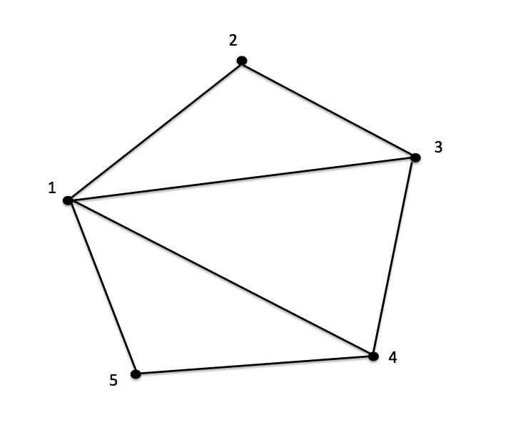

_'とそれに続けて式を書くと添字付き変数となります．
$a_1
$b_1_2
$c_(+ 1 1)_3_(* 10 10)
コレクションをリストとしてパターンマッチし，
consとjoinを組み合わせたパターンでマッチすると，
そのコレクションからいくつかの要素を取り出す組み合わせをとることができます．
以下は2つの要素を取り出す組み合わせを返す例です．
(test (match-all {1 2 3 4 5} (List Integer)
[<join_ <cons $a_1 <join _ <cons $a_2 _>>>>
[a_1 a_2]]))
=> {[1 2] [1 3] [1 4] [1 5] [2 3]
[2 4] [2 5] [3 4] [3 5] [4 5]}
また，以下のようにすると3つの要素を取り出す組み合わせを返す式になります．
(test (match-all {1 2 3 4 5} (List Integer)
[<join_ <cons $a_1 <join _ <cons $a_2 <join _ <cons $a_3 _>>>>>>
[a_1 a_2 a_3]]))
=> {[1 2 3] [1 2 4] [1 2 5] [1 3 4] [1 3 5]
[1 4 5] [2 3 4] [2 3 5] [2 4 5] [3 4 5]}
取り出す要素の数が固定なら，上記の例の通り1つの簡潔なパターンで表現できます．
しかし，パラメータの値によって取り出す要素の数を変えるようなパターンを書こうとすると特別な工夫なしではそれが不可能なことに気付きます．
<join _ <cons $a_1
<join _ <cons $a_2
...
<join _ <cons$a_i
...
<join _ <cons $a_n _>>...>
ループ構文を用いるとこのような添字だけが変わる式が任意の回数続く式を表現することができます．
以下は上の式をループ構文を使って表現したものです．
(loop $l $i [1 n] <join _ <cons $a_i l>> _)
第1引数と第2引数ではそれぞれループ変数，添字変数を指定します．
第3引数では添字変数のとる範囲が指定します．
この例では1からnまでの範囲を添字の変数は動くと指定されています．
第4引数ではループする式を記述します．
第5引数ではループの最後の式を記述します．
このパターンを使うと引数で指定されたコレクションから，もう1つの引数で指定された数の要素を抽出した組み合わせを返す関数を簡潔に定義できます．
(define $combination
(lambda [$xs $k]
(match-all xs (List Something)
[(loop $l $i [1 k] <join _ <cons $a_i l>> _)
[@(loop $l $i [1 k] {a_i @l} {})]
])))
(test (combination {1 2 3 4 5} 3))
=> {[1 2 3] [1 2 4] [1 2 5] [1 3 4] [1 3 5]
[1 4 5] [2 3 4] [2 3 5] [2 4 5] [3 4 5]}
(test (combination {1 2 3 4 5 6 7 8} 2))
=> {[1 2] [1 3] [1 4] [1 5] [1 6] [1 7] [1 8]
[2 3] [2 4] [2 5] [2 6] [2 7] [2 8] [3 4]
[3 5] [3 6] [3 7] [3 8] [4 5] [4 6] [4 7]
[4 8] [5 6] [5 7] [5 8] [6 7] [6 8] [7 8]}
パターンだけでなく，マッチ節の実行部の式もループ構文を使って書かれています．
ループ構文はパターンの表現力を大きく引き上げます．
ループ構文を使うと，グラフのノードの個数によってパターンの長さが変わるハミルトン閉路やハミルトンパスのパターンが1つのパターンで簡潔に表現できます．
ハミルトン閉路にパターンマッチするパターンは以下のように書けます．
パターンの長さは，グラフのノードの個数によって変わるので，ループ構文を使って表現されています．
(define $hamilton-cycle
(lambda [$g]
(let {[$n (size g)]}
(match-all g Graph
[<cons <node $a_1 <cons $a_2 _> _>
(loop $l $i [3 n]
<cons <node ,a_(- i 1) <cons $a_i _> _>
l>
<cons <node ,a_n <cons ,a_1 _> _>
_>)>
[@(loop $l $i [1 n] {a_i @l} {})]
]))))
(define $g {<node 1 {2 3 4 5} {2 3 4 5}>
<node 2 {1 3} {1 3}>
<node 3 {1 2 4} {1 2 4}>
<node 4 {1 3 5} {1 3 5}>
<node 5 {1 5} {1 5}>})

ハミルトンパスのパターンは以下のように書けます．
(define $hamilton-path
(lambda [$g]
(let {[$n (size g)]}
(match-all g Graph
[<cons <node $a_1 <cons $a_2 _> _>
(loop $l $i [3 n]
<cons <node ,a_(- i 1) <cons $a_i _> _>
l>
<cons <node ,a_n _ _>
<nil>>)>
[@(loop $l $i [1 n] {a_i @l} {})]
]))))